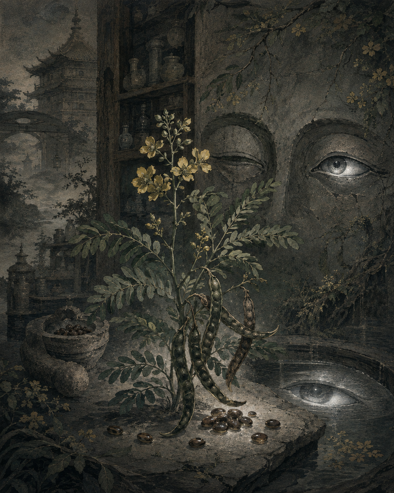

七味 · 壹
决明
SEMEN CASSIAE
看见的，未必在那里。
看不见的，未必不存在。
甘 · 苦 · 咸微寒入肝、大肠经
世间有神无人，三万年后，世间有人无神。你在荒废的神庙里醒来，眼前只剩一圈微光。黑暗深处，还有另一个呼吸。

七味 · 壹
SEMEN CASSIAE
看见的，未必在那里。
看不见的，未必不存在。
世间有神无人，三万年后，世间有人无神。你在荒废的神庙里醒来，眼前只剩一圈微光。黑暗深处，还有另一个呼吸。